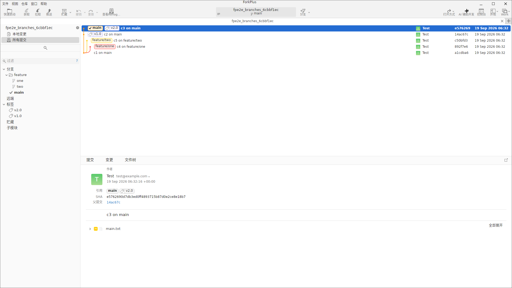
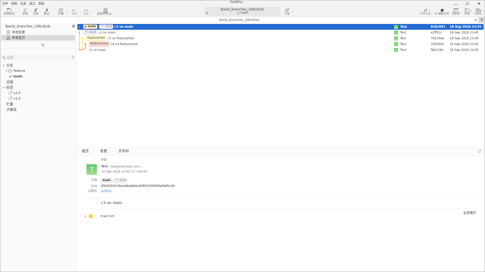
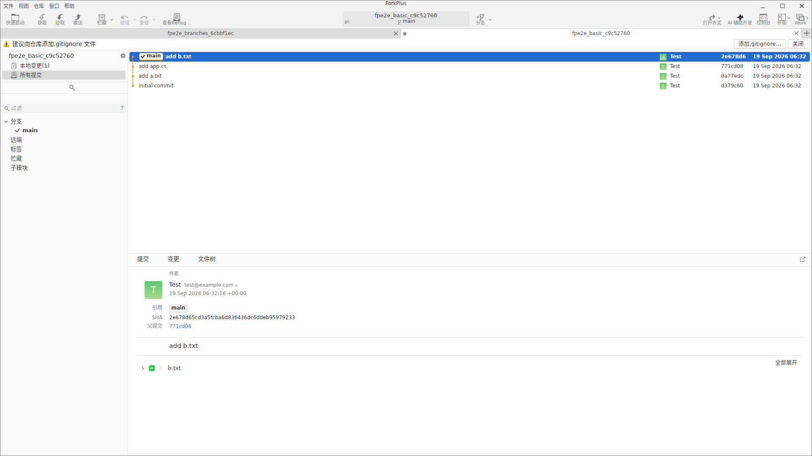

主窗口整体布局
打开任意仓库后进入主界面。窗口自上而下、自左而右分为：工具栏、侧边栏、修订列表、修订详情与状态栏五个区域。

工具栏
- 菜单栏：文件、视图、仓库、窗口、帮助。
- 快捷操作：获取、抓取、拉取、推送、贮藏、应用等常用 Git 操作按钮。
- 仓库操作：打开方式、AI 编码开发、同步等入口。
侧边栏
左侧树形导航按分组组织仓库内容，每个分组可独立展开/折叠：
- 当前仓库：仓库名与本地变更入口。
- 分支：本地分支列表，当前分支带勾选标记。
- 远端：远程仓库与远端分支。
- 标签：版本标签列表。
- 贮藏：工作区快照（Stash）列表。
- 子模块：仓库引用的子模块。
修订列表
中部主区域以图形化方式展示提交历史：左侧的分支图用不同颜色区分各分支的合并与分叉关系，每行显示分支/标签标记、提交说明、构建状态、提交哈希与时间。
修订详情
底部面板展示选中提交的详细信息，包含「提交」「变更」「文件树」三个标签页（详见第 3、4 章）。
侧边栏分组展开
点击任意分组标题即可展开或折叠该分组。例如展开「标签」后可以看到仓库中的所有版本标签，标签会同时出现在修订列表对应提交的行内。

说明：标签在修订列表中以橙色标记显示（如
v2.0），当前分支以勾选标记标识（main ✓）。多标签页切换
在同一主窗口中可以打开多个仓库，每个仓库一个标签页。标签页标题显示仓库名与当前分支；非活动标签显示关闭按钮 ×，点击任意标签即可切换。

fpe2e_basic_…，另一仓库 fpe2e_branches_… 处于待切换状态小贴士：用 Ctrl + Tab 可在标签页间顺序切换；Ctrl + W 关闭当前标签页。切换后侧边栏、修订列表与详情面板会整体更新为对应仓库的内容。